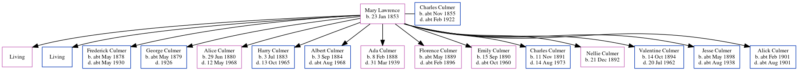

Mary Ann Culmer (née Lawrence) 1853 -
[ Home ] | [ Calendar ] | [ Surnames Index ] | [ Census Index ] | [ Family History ]Mary Lawrence, the wife of Charles Culmer (the first cousin three-times-removed on the mother's side of Nigel Horne), was born in Preston, Kent, England on Jan 23, 18531,2,3 and married Charles (a coal dealer with whom she had 15 children: Frances Lilian, William Charles, Frederick Percy, George James, Alice Harriet, Harry Robert, Albert Thomas, Ada Elsie, Florence Emma, Emily Rose, Charles Ernest, Nellie Louisa, Valentine Frank, Jesse Arthur and Alick Lawrence, along with 2 surviving children) at St Mary Of Charity's Church, Church Road, Faversham, Kent, England on Aug 22, 18754.
During her life, she was living at 56 Tanners Street in Faversham on Apr 3, 18811 and on Apr 5, 18915; at 19 Cecil Avenue, Strood, Kent on Mar 31, 19016; at 39 Cross Street, Strood, Kent on Apr 2, 19117; and at 15 Billet Road, Thurrock, Essex, England on Sep 29, 19392.
Children
- Frederick Percy was born c. May 1878
- George James was born c. May 1879
- Alice Harriet was born on Jun 29, 1880
- Harry Robert was born on Jul 3, 1883
- Albert Thomas was born on Sep 3, 1884
- Ada Elsie was born on Feb 8, 1888
- Florence Emma was born c. May 1889
- Emily Rose was born on Sep 15, 1890
- Charles Ernest was born on Nov 11, 1891
- Nellie Louisa was born on Dec 21, 1892
- Valentine Frank was born on Oct 14, 1894
- Jesse Arthur was born c. May 1898
- Alick Lawrence was born c. Feb 1901
Citations
- 1881 England, Wales & Scotland Census - Findmypast (was age 28 and the wife of the head of the household)
- 1939 Register - Findmypast (was recorded at this address)
- England Marriages 1538-1973 - Findmypast
- England Marriages 1538-1973 - Findmypast
- 1891 England, Wales & Scotland Census - Findmypast (was age 38 and the wife of the head of the household)
- 1901 England, Wales & Scotland Census - Findmypast (was age 48 and the wife of the head of the household)
- 1911 Census for England & Wales - Findmypast (was age 58 and the wife of the head of the household)
Media
1939 Register Transcription - TNA-R39-1551-1551G-003-11
1939 Register Transcription - TNA-R39-1551-1551G-003-13
Family Tree
Generated by ged2site. Last updated on Jun 11, 2024